Chapitre 1 Manipulation de graphes avec igraph
Le but de ce tutoriel est de se familiariser avec les principales fonctions du package igraph. On trouvera un descriptif de ce package à l’adresse http://igraph.org/r/. On pourra également consulter le tutoriel (très complet) suivant : http://kateto.net/networks-r-igraph.
Nous commençons par charger le package
library(igraph)1.1 Construction de graphes avec igraph
Comme pour des données classiques, il est possible de construire des graphes directement dans R ou de les importer à partir de fichiers externes.
1.1.1 Quelques fonctions R pour construire des graphes
L’approcher la plus naturelle est de définir un graphe à partir d’une liste d’arêtes :
g1 <- graph(edges=c(1,2,1,3,2,3,3,5,2,4,4,5,5,6,4,6,4,7,6,7),n=7,directed=F)
plot(g1)Si la liste d’arêtes est donnée sous forme de noms, il n’est pas nécessaire d’indiquer le nombre de nœuds.
g2 <- graph(edges=c("Eric","Laurent","Laurent","Mory"))
plot(g2)
Différentes options sont proposées dans la fonction graph :
n: le nombre maximal de nœudsisolates: ajout de nœuds isolésdirected: graphes dirigés ou non- …
Par exemple
g3 <- graph(edges=c("Eric","Mory","Mory","Vincent"),isolates="Laurent")
plot(g3)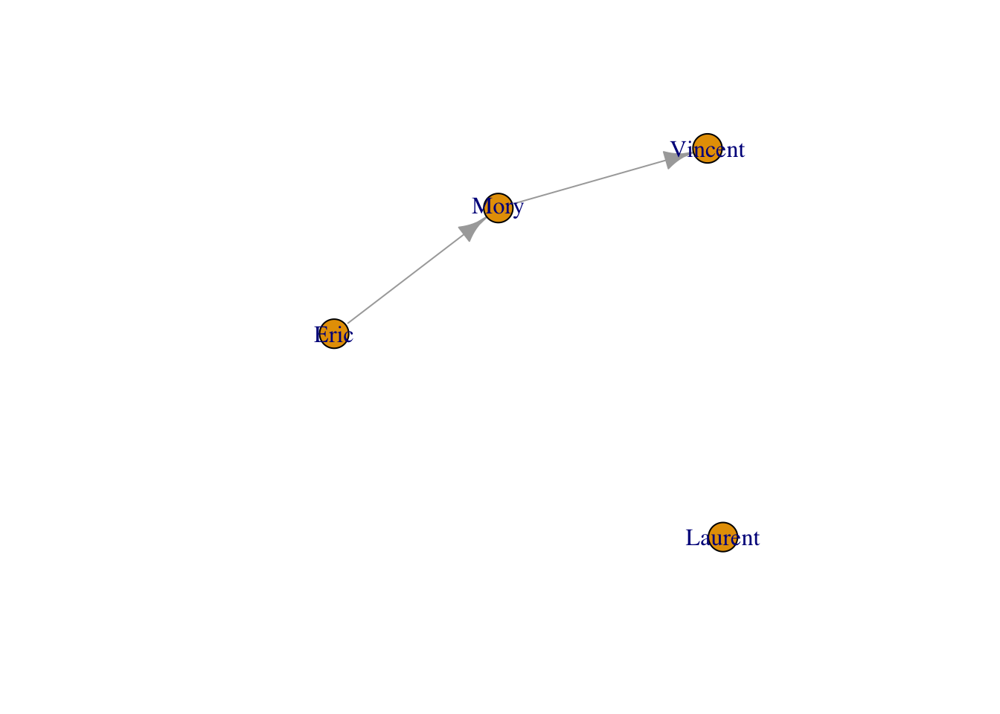
Il existe également des fonctions spécifiques qui peuvent aider à la construction de graphes, par exemple make_full_graph :
plot(make_full_graph(4))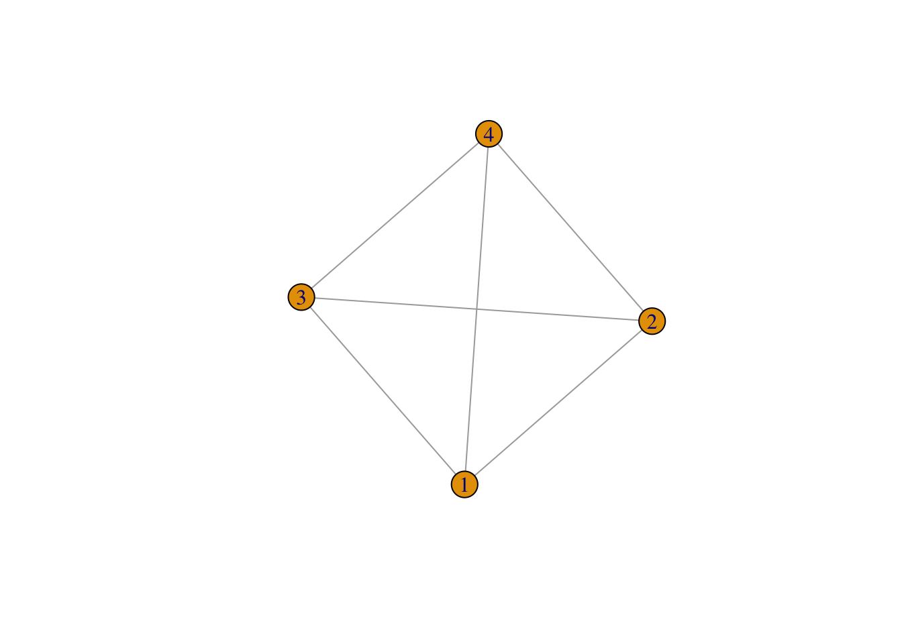
plot(make_empty_graph(4))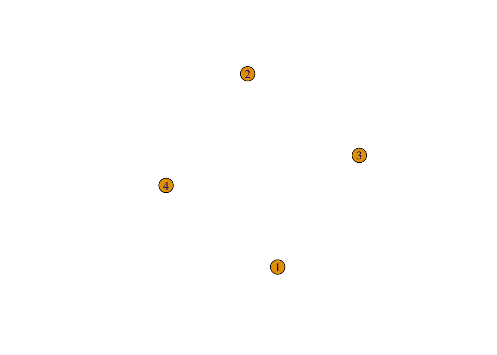
Il est également possible “d’additionner” des graphes
plot(make_full_graph(4)+make_full_graph(3))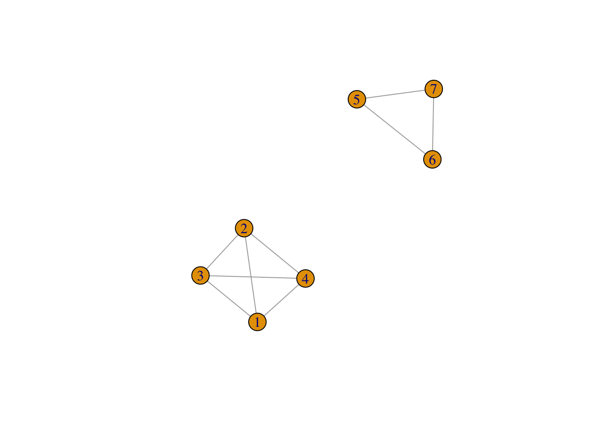
L’opérateur pipe permet une lecture du code plus lisible
(make_full_graph(4)+make_full_graph(3)) |> plot()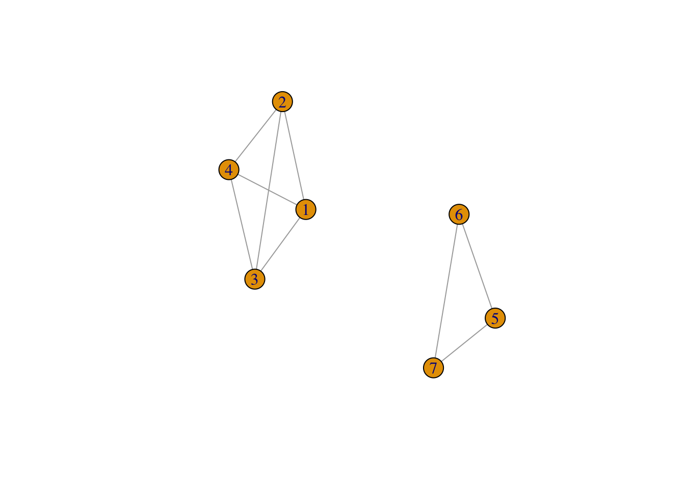 Il est également facile d’ajouter des arêtes avec add_edges :
(make_full_graph(4)+make_full_graph(3)) |> add_edges(c(4,5)) |> plot()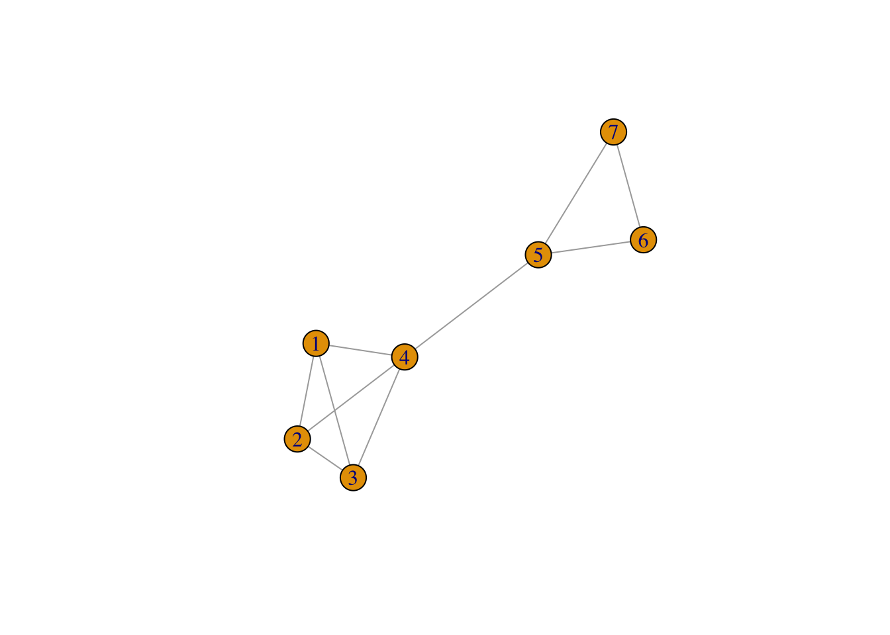
Exercice 1.1 (Quelques graphes spécifiques) Tester et expliquer les fonctions make_empty_graph, make_ring et make_star.
1.1.2 Construction à partir d’un fichier externe
Le plus souvent, on aura à récupérer des données récoltées dans des fichiers txt ou csv pour construire le graphe.
Exercice 1.2 (Importation) On considère le jeu de données Friendship-network_data_2013.csv qui se trouve sur le site http://www.sociopatterns.org/datasets/high-school-contact-and-friendship-networks/. Ces données concernent des relations entre étudiants.
Importer les données à l’aide de read.table.
Ce fichier contient 2 colonnes et chaque colonne contient une arête. Visualiser le graphe. On pourra utiliser graph_from_data_frame.
On considère un graphe permettant de visualiser des connexions entre médias :
- les nœuds sont définis dans le fichier
Dataset1-Media-Example-NODES.csv - les arêtes dans le fichier
Dataset1-Media-Example-EDGES.csv.
Importer ces fichiers.
- les nœuds sont définis dans le fichier
Construire le graphe
igraphassocié à ces deux fichiers à l’aide de graph_from_data_frame.La fonction read_graph peut s’adapter à de nombreux formats de graphe :
read_graph(file, format = c("edgelist", "pajek", "ncol", "lgl", "graphml", "dimacs", "graphdb", "gml", "dl"), …)On considère par exemple le fichier lesmis.gml disponible ici. Les nœuds correspondent aux personnages du roman et une arête est présente si deux personnages apparaissent dans le même chapitre. Le poids de l’arête est déterminé par le nombre de chapitres où les deux personnages sont présents. Importer le graphe à l’aide de read_graph et visualiser le.
1.1.3 Matrice d’adjacence
Enfin un graphe peut également s’identifier avec une matrice d’adjacence :
A <- matrix(c(0,0,0,0,0,0,1,1,0,1,0,1,0,1,1,0), 4, 4)
A
[,1] [,2] [,3] [,4]
[1,] 0 0 0 0
[2,] 0 0 1 1
[3,] 0 1 0 1
[4,] 0 1 1 0On pourra utiliser dans ce cas la fonction graph_from_adjacency_matrix pour convertir la matrice en un objet igraph :
G <- graph_from_adjacency_matrix(A, mode='undirected')
plot(G)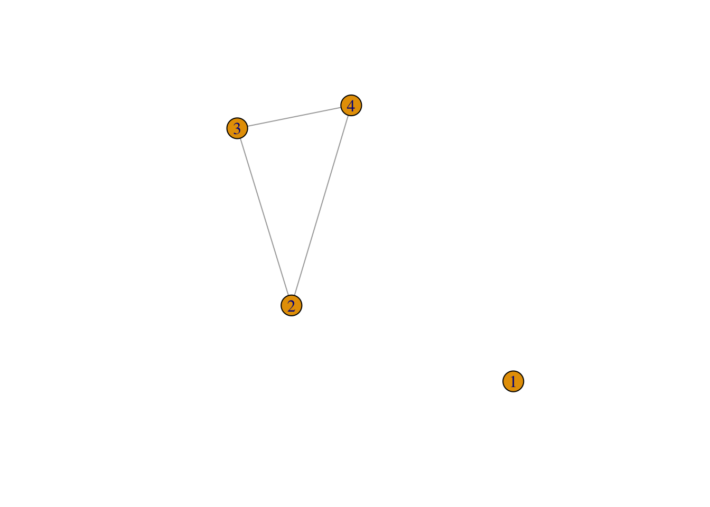
On peut bien entendu faire l’opération inverse et calculer la matrice d’ajacence d’un graphe :
as_adj(G)
4 x 4 sparse Matrix of class "dgCMatrix"
[1,] . . . .
[2,] . . 1 1
[3,] . 1 . 1
[4,] . 1 1 .1.2 Visualisation d’un graphe
Un des intérêts principaux du graph mining et de visualiser les connexions entre les nœuds à l’aide d’un graphe. Se pose bien entendu la question (difficile) de la position des nœuds dans le plan pour obtenir la visualisation la plus pertinente du graphe. On peut ensuite s’interroger sur des outils classiques qui vont permettre de colorier les nœuds, d’utiliser différents symboles pour les arêtes, etc…
1.2.1 Network layouts : algorithmes usuels de visualisation
Un graphe peut être visualisé à l’aide de plusieurs algorithmes. On pourra trouver un descriptif ici. On se contentera de donner différents layouts pour l’exemple suivant :
G <- make_full_graph(5)+make_full_graph(8)+make_ring(6)
plot(G)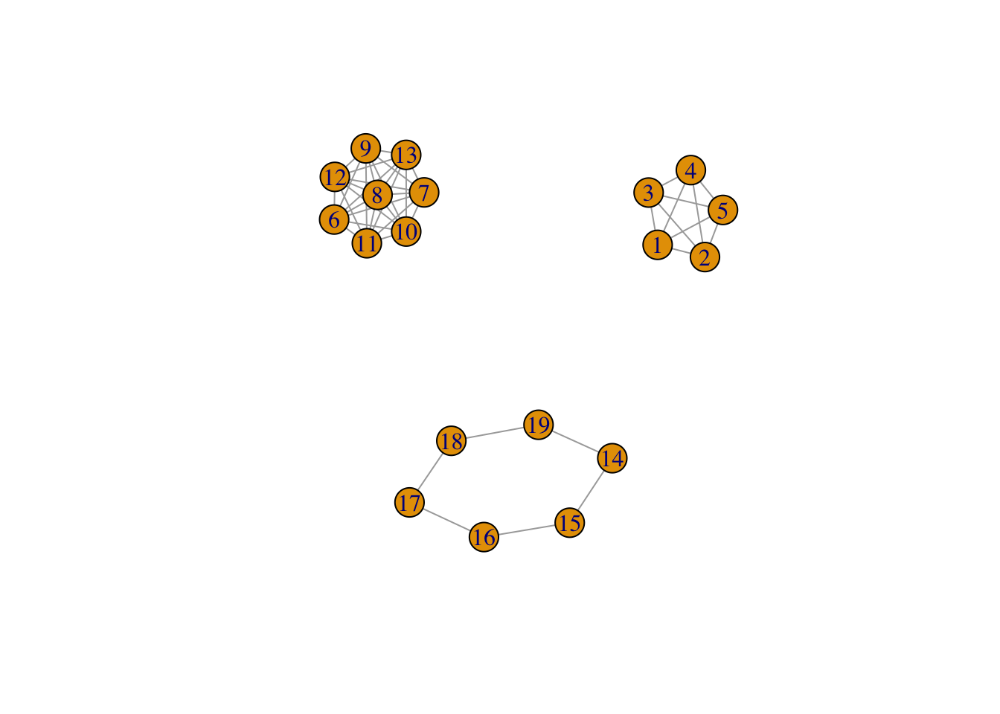
plot(G,layout=layout_as_star(G)) 
plot(G,layout=layout.circle(G)) 
plot(G,layout=layout_randomly(G))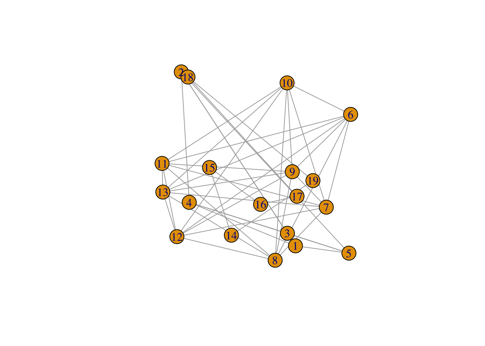
Deux algorithmes sont connus pour avoir des visualisations jugées “esthétiques”. L’idée, très rapidement, est d’essayer d’obtenir la position des nœuds et des arêtes de façon uniforme dans le plan. Pour plus d’informations sur ce sujet difficile on pourra consulter cet article.
plot(G,layout=layout_with_fr(G))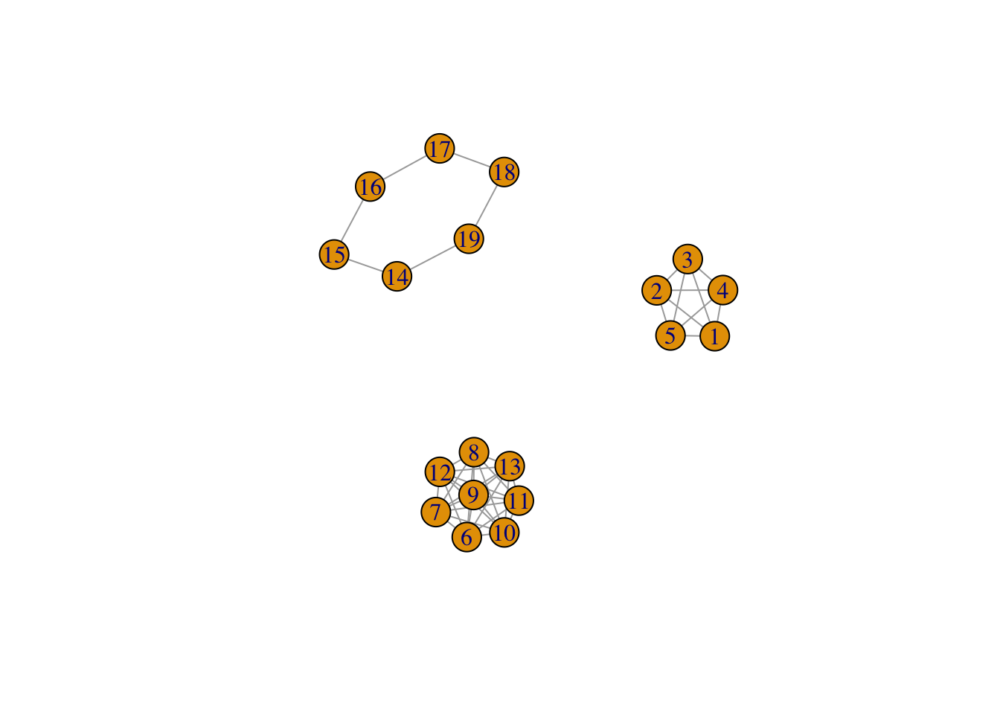
plot(G,layout=layout_with_kk(G))
Enfin la fonction tktplot
tkplot(G)1.2.2 Personnalisation du graphe
Il est bien entendu possible de modifier les couleurs, tailles… des nœuds et arêtes. Deux stratégies sont possibles avec igraph :
- utiliser les options de plot.igraph : vertex.color, vertex.shape, vertex.size, vertex.label… et edge.color, edge.label, edge.width…
- travailler sur les nœuds et arêtes séparément à l’aide des fonctions V() et E().
La fonction plot.igraph :
plot(G,
vertex.color="yellow",vertex.size=15,vertex.label.color="blue",
edge.color="red",edge.width=5)On peut également modifier les paramètre des nœuds
G1 <- G
V(G1)$color <- "red"
V(G1)$size <- 15et des arêtes
E(G1)$color <- "blue"
E(G1)$size <- 3On a ainsi
vertex_attr(G1)
$color
[1] "red" "red" "red" "red" "red" "red" "red" "red" "red"
[10] "red" "red" "red" "red" "red" "red" "red" "red" "red"
[19] "red"
$size
[1] 15 15 15 15 15 15 15 15 15 15 15 15 15 15 15 15 15 15
[19] 15
edge_attr(G1)
$color
[1] "blue" "blue" "blue" "blue" "blue" "blue" "blue" "blue"
[9] "blue" "blue" "blue" "blue" "blue" "blue" "blue" "blue"
[17] "blue" "blue" "blue" "blue" "blue" "blue" "blue" "blue"
[25] "blue" "blue" "blue" "blue" "blue" "blue" "blue" "blue"
[33] "blue" "blue" "blue" "blue" "blue" "blue" "blue" "blue"
[41] "blue" "blue" "blue" "blue"
$size
[1] 3 3 3 3 3 3 3 3 3 3 3 3 3 3 3 3 3 3 3 3 3 3 3 3 3 3 3 3
[29] 3 3 3 3 3 3 3 3 3 3 3 3 3 3 3 3et on peut visualiser le graphe (sans option dans plot.igraph) :
plot(G1)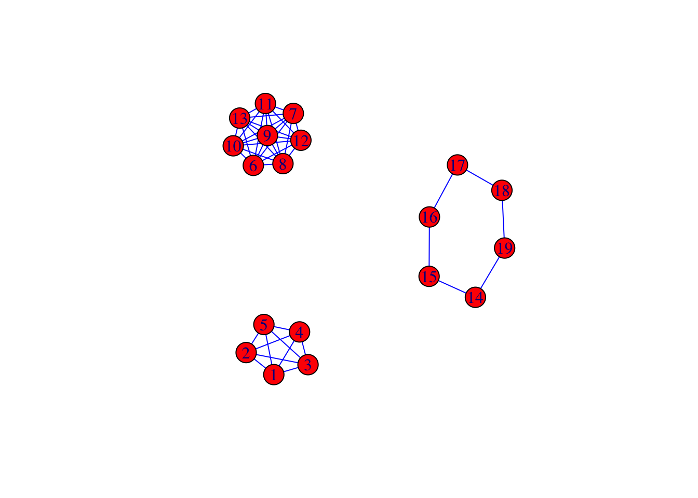
Exercice 1.3 (Gérer les couleurs avec igraph)
Construire un graphe avec 3 composantes composantes connexes de taille 10, 14 et 8.
Colorier les nœuds de chaque composante d’une couleur différente.
Relier les composantes en ajoutant 2 arêtes (et pas plus).
Utiliser une couleur et une taille différente pour les deux arêtes crées.
Exercice 1.4 (Customiser un graphe) On considère le graphe net sur les médias défini dans l’exercice 1.2. Représenter le graphe en ajoutant :
- le nom des nœuds (media)
- une couleur différente en fonction du type de média
- une taille de nœud différente en fonction de l’audience
- une taille d’arête différente en fonction du poids (
weight) - une couleur d’arête différente en fonction du type (
type).
1.3 Statistiques descriptives sur les graphes
Comme pour tout les types de données, il est souvent crucial de calculer des indicateurs descriptifs sur les graphes. Nous présentons les indicateurs standards tels que le diamètre, la densité, les degrés de centralité et d’intermédiarité…
Exercice 1.5 (Quelques descripteurs) On considère toujours le graphe des exercices précédents sur les média (net).
Calculer les nombre de nœuds, d’arêtes, le diamètre et la densité du graphe.
Combien y a t-il de triangles dans le graphes ? On pourra calculer ce nombre de plusieurs façons.
Calculer la transitivité.
Quels sont les nœuds connectés avec le nœud 3 ? On pourra utiliser neighbors.
Étudier les composantes connexes du graphe.
Calculer les degrés des nœuds et représenter les avec un barplot. On pourra utiliser degree puis degree_distribution.
Calculer les degrés de proximité et d’intermédiarité et ordonner les observations en fonction de ces degrés.
Exercice 1.6 (Centralité et intermédiarité) On considère le graphe suivant.
G <- make_star(5,mode="undirected")
plot(G)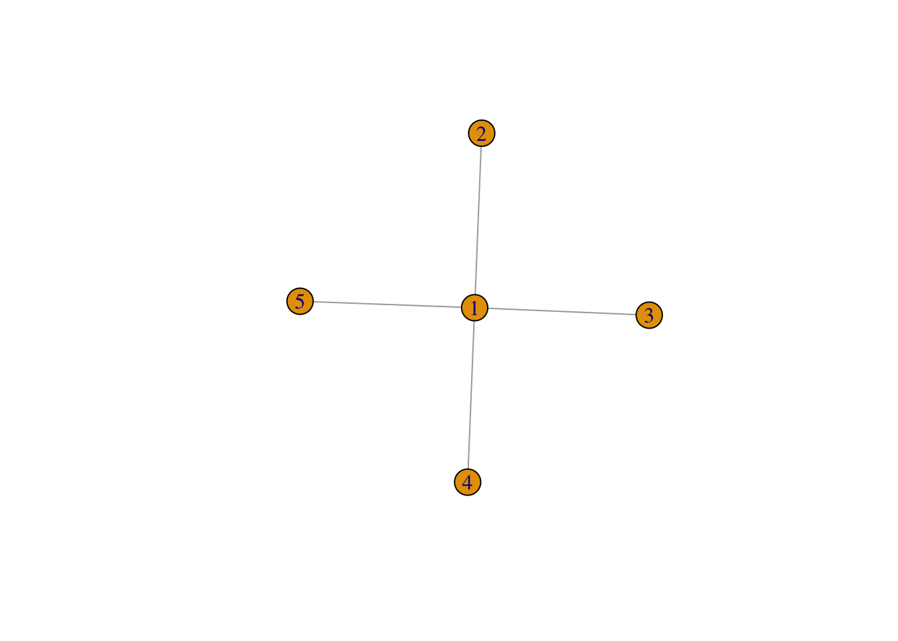
Calculer en utilisant la définition les degrés de centralité et d’intermédiarité des nœuds de \(G\). Retrouver ces valeurs à l’aide de fonctions R.
Exercice 1.7 (Comparaison de nœuds) On considère le graphe karate que l’on peut récupérer dans le package igraphdata :
En étudiant les différents critères d’importance des nœuds, identifier les nœuds importants et interpréter.
1.4 Autres packages pour visualiser les graphes
1.4.1 Graphes dynamiques avec visNetwork
Nous avons vu que le package igraph propose une visualisation statique d’un réseau. Pour donner un caractère dynamique à ce type de représentation, on pourra utiliser le package visNetwork. Une représentation standard visNetwork s’effectue en spécifiant les nœuds et connexions d’un graphe. Voici quelques exemples d’utilisation.
set.seed(1234)
nodes <- data.frame(id = 1:15, label = paste("Id", 1:15),
group=sample(LETTERS[1:3], 15, replace = TRUE))
edges <- data.frame(from = trunc(runif(15)*(15-1))+1,to = trunc(runif(15)*(15-1))+1)
library(visNetwork)
visNetwork(nodes,edges)visNetwork(nodes, edges) |> visOptions(highlightNearest = TRUE)visNetwork(nodes, edges) |>
visOptions(highlightNearest = TRUE, nodesIdSelection = TRUE)
visNetwork(nodes, edges) |> visOptions(selectedBy = "group")Exercice 1.8 (Interactions entre médias) On considère à nouveau le graphe sur les médias
nodes <- read.csv("data/Dataset1-Media-Example-NODES.csv", header=T, as.is=T)
links <- read.csv("data/Dataset1-Media-Example-EDGES.csv", header=T, as.is=T)
head(nodes)
id media media.type type.label
1 s01 NY Times 1 Newspaper
2 s02 Washington Post 1 Newspaper
3 s03 Wall Street Journal 1 Newspaper
4 s04 USA Today 1 Newspaper
5 s05 LA Times 1 Newspaper
6 s06 New York Post 1 Newspaper
audience.size
1 20
2 25
3 30
4 32
5 20
6 50
head(links)
from to weight type
1 s01 s02 10 hyperlink
2 s01 s02 12 hyperlink
3 s01 s03 22 hyperlink
4 s01 s04 21 hyperlink
5 s04 s11 22 mention
6 s05 s15 21 mentionL’objet nodes représente les nœuds du graphe et l’objet links les arêtes. On définit l’objet graphe avec
media <- graph_from_data_frame(d=links, vertices=nodes, directed=T)
V(media)$name <- nodes$mediaet on peut le visualiser en faisant un plot de cet objet
plot(media)
Visualiser ce graphe avec VisNetwork. On pourra utiliser la fonction toVisNetworkData
Ajouter une option qui permette de sélectionner le type de media (Newspaper, TV ou Online).
Utiliser une couleur différente pour chaque type de media.
Faire des flèches d’épaisseur différente en fonction du poids (weight). On pourra également ajouter l’option visOptions(highlightNearest = TRUE).
1.4.2 Graphes ggplot avec ggnet
Les fonctions ggnet et ggnet2 du package GGally permettent de tracer des graphes ggplot. On pourra trouver un descriptif clair à l’url suivante https://briatte.github.io/ggnet/.
library(GGally)On construit un premier graphe que l’on visualise avec igraph.
set.seed(1)
G <- sample_gnp(10,0.2)
plot(G)Pour visualiser ce graphe en ggplot il faut le transformer en objet network :
net <- igraph::as_data_frame(G) |> network::as.network()On peut maintenant utiliser les fonctions ggnet et ggnet2.
ggnet(net)ggnet2(net)On retrouver bien entendu la plupart des options standards pour visualiser les noeuds et arêtes, par exemple
ggnet2(net, node.size = 6, node.color = "black", edge.size = 1, edge.color = "grey")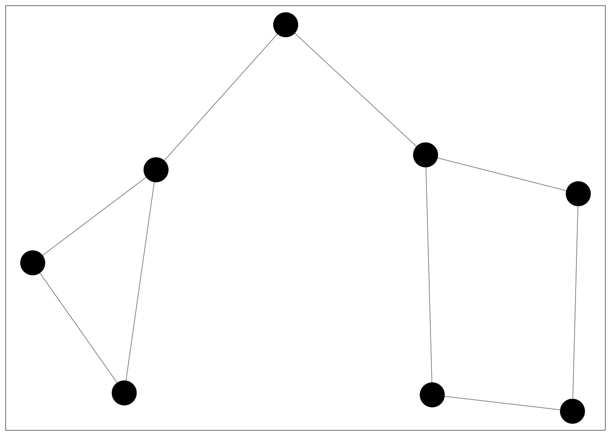
ggnet2(net, size = 6, color = rep(c("tomato", "steelblue"), 4))